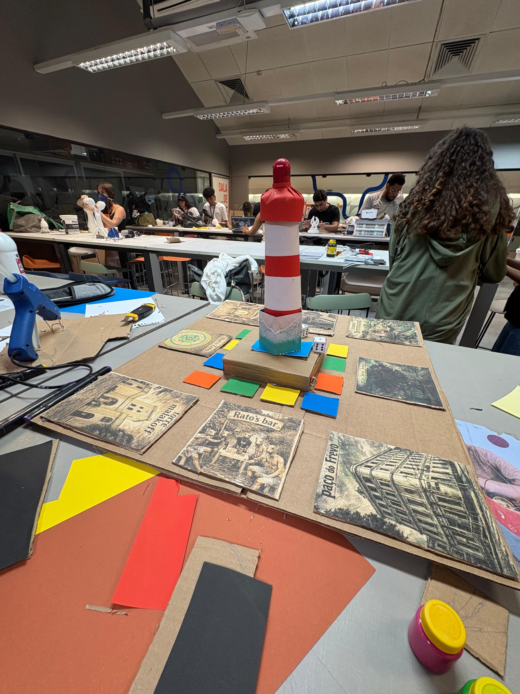
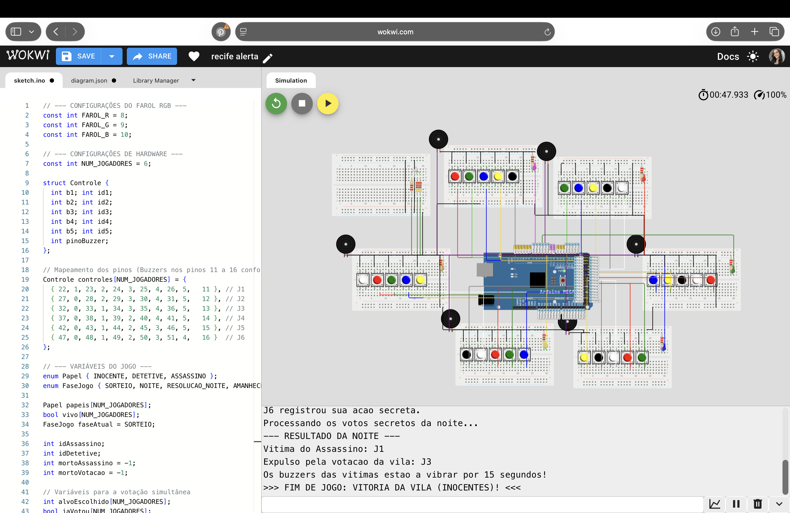
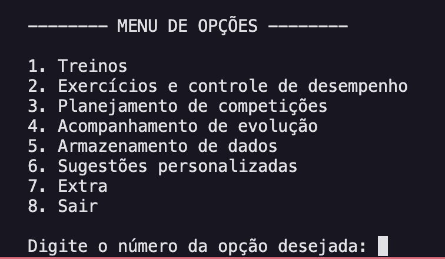

Recife Alerta
Desenvolvido para a disciplina de Projetos 1 na Cesar School, este projeto é uma versão de tabuleiro do clássico "Cidade Dorme" com focus em acessibilidade. Utilizando integração com Arduino, adaptamos o jogo para incluir pessoas com deficiência auditiva: as ações secretas e os comandos de voz tradicionais foram totalmente substituídos por mechanisms táteis de vibração. Mais do que unir código e hardware, é a Tecnologia aplicada para derrubar barreiras e criar uma experiência de entretenimento verdadeiramente inclusiva.

Protótipo não funcional para teste da lógica do jogo.

Teste do hardware e do código, feito em C/C++.
HYROX Planner
Desenvolvido em equipe para a disciplina de Fundamentos da Programação 1, o HYROX Planner é uma aplicação via terminal feita inteiramente em Python. O sistema permite gerenciar rotinas de treinos e registrar o desempenho em exercícios específicos da modalidade, a exemplo do SkiErg, Sled Push, e Burpee Broad Jumps. A ferramenta também oferece o planejamento de competições com cálculo automático de contagem regressiva para os eventos, além de realizar o armazenamento persistente de todos os dados em arquivos de texto.

Menu principal interativo do sistema.